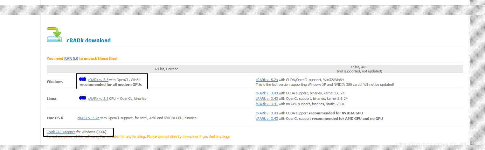
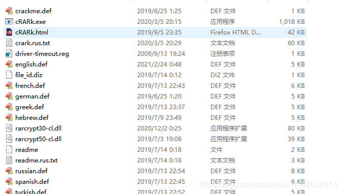
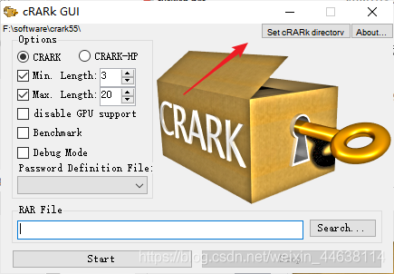
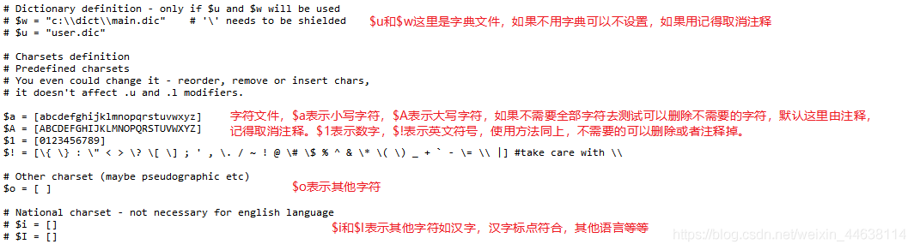
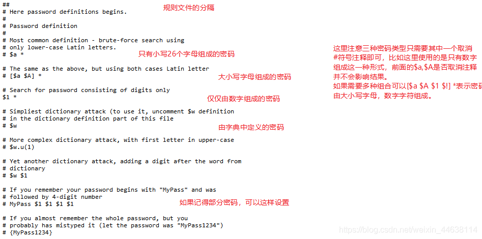
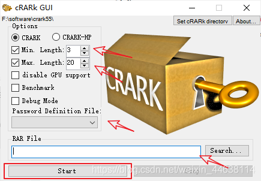
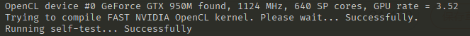
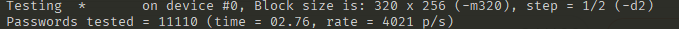
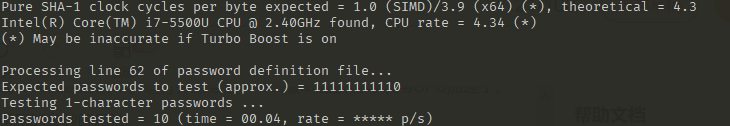

cRARk使用方法
压缩文件如果忘记密码就需要使用暴力破解的方法进行破解，因为使用了加密的手段，是无法绕过密码验证的。
cRARk是一款开源的功能强大的rar，7z类压缩软件的破解工具，支持GPU加速。
官网地址
目前有命令行版本和windows的GUI版本。
使用方法
在官网下载命令行版本
注意：GUI版本必须有命令行版本下才能运行
GUI使用
-
命令行版本下载解压，提示需要输入密码，但是实际上密码为空。或者为UTF-16。（crark55.rar）
 -
然后解压GUI版本，里面只有一个可运行程序。
-
双击运行

点击Set cRARk directorv设置cRARk程序目录，然后Password Definition File（密码规则文件）那里会有englis等选项。 -
设置def文件（密码规则文件）。
- 在cRARk命令行版本目录下，有好多扩展名为def的文件，我们使用
english.def，复制一份并重命名为password.def。 - 密码规则文件由两部分组成，分别为字符定义部分和密码规则部分。两部分由
##隔开。单个#表示注释。
主要是$a,$A,$1,$!前面的#去掉。
保存并关闭。
- 在cRARk命令行版本目录下，有好多扩展名为def的文件，我们使用

箭头部分前两个分别表示密码最小长度和最大长度，第三个选择设置好的password。第四个是要破解的rar文件路径。然后点start开始运行。
本人测试GUI程序一致是使用CPU做计算的，CPU的话，i7-5500U速度才几百个密码/s。所以为了用GPU做运算，使用了命令行版本。当然后来发现是设置问题，GUI版本也可以用GPU加速的。
命令行使用
- 首先讲cRARk所在路径添加到环境变量
path中。（这里是为了方便，也可以不添加） - 运行
driver-timeout.reg，重启计算机。这是为了使程序能用GPU加速，我下载的版本使用了opencl加速，也可以下载cuda加速的版本。运行并重启后，GUI版本应该也可以用GPU加速了。 - 运行
crark，可以看到所用的参数的用法。
基本用法：
cRARk -p"password.def" rarpath
rarpath 表示要破解的文件位置，password.def是修改好的
password definition filename，注意-p后面没有空格，由于win命令行的特性，需要把password.def用引号括起来，不然password和def会分开识别产生错误。password.def的生成方法见上文GUI使用中。
进阶用法：
cRARk.exe -l1 -g10 -p"password.def" -n0 rarpath
-l表示最小密码位数，-g表示最大密码位数，后面都没有空格。-n表示使用的显卡，我电脑是0，也可能是1，2，3等等。
成功运行
成功使用GPU后会出下下去，我电脑是950M。

还会显示在#0上运行

如果是在CPU上运行会显示下图。没有GPU型号，也不会显示在#0上运行了。
当然也可以从任务管理器CPU和GPU占用看出来。
速度
在我的电脑上（i7-5500U,GTX950M）运行，使用cpu速度大概是450p/s（密码每秒），计算3位数字密码需要2.45秒，4位数字密码需要27.60秒，计算5位数字密码需要5分12秒
使用GPU运行，速度大概4300p/s，3位密码需要0.61秒，4位密码需要2.71秒，5位密码需要23.74秒，6位密码需要4分16秒。也就是说大概快10倍。
但是随着密码位数增长，密码排列组合的结果呈指数式增长，8位密码在我电脑上就需要4个小时了。再加上rar等压缩软件的密码不限于字母数字符号，还可能是汉字或者其他符号等等，因此这个软件比较鸡肋，不是所有的都能破解。
这个软件比较适合于位数比较少的，确定符号在字母数字符号之内的密码的破解，个人电脑使用最好不要超过10位（其实字母数字符号加一起的10位用现在最好的个人电脑恐怕也要算几个星期）。
由于压缩软件的加密机制，除了暴力破解或者字典破解也没有更好的办法（除非有漏洞），实际上没有什么软件可以100%破解密码。因此对于想要找破解压缩软件的万能办法的朋友还是死心吧。


![]()
 更多相似内容
更多相似内容 903
903